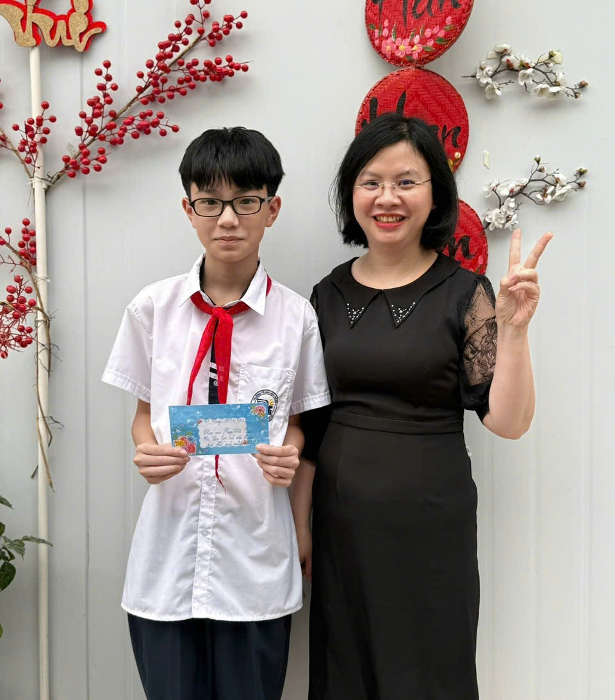
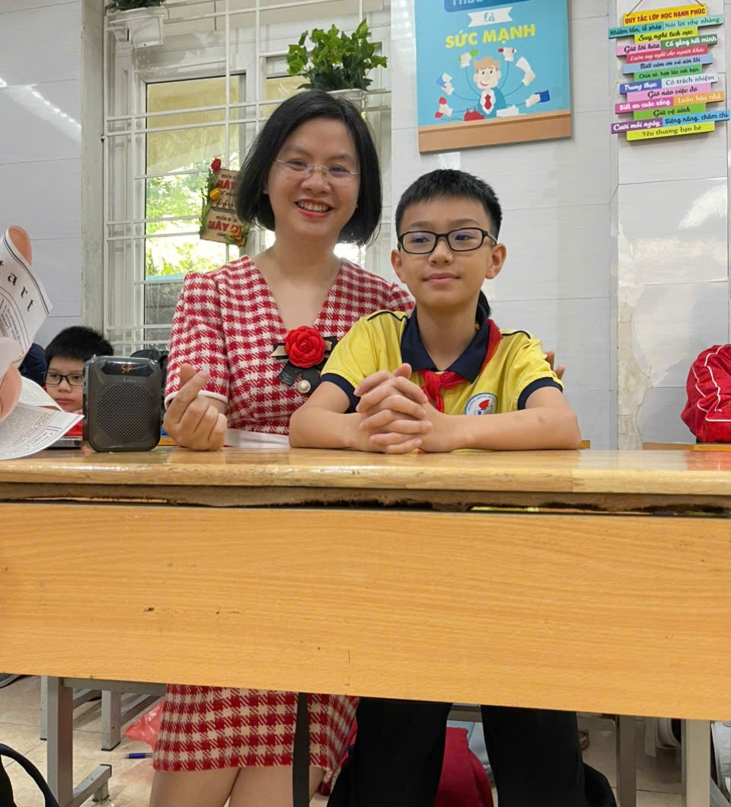

01
Người lái đò của thanh xuân
❦
Hành trình kỉ niệm
❦
03
Người truyền cảm hứng
04
Điều con biết ơn

05
Góc kỷ niệm

06
Lá thư gửi cô
✦
❀
♡
✉
➶
Cảm ơn cô vì đã luôn ở đó, lặng lẽ yêu thương và nâng đỡ con